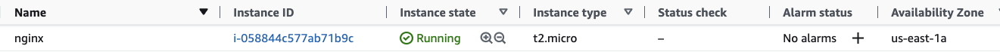
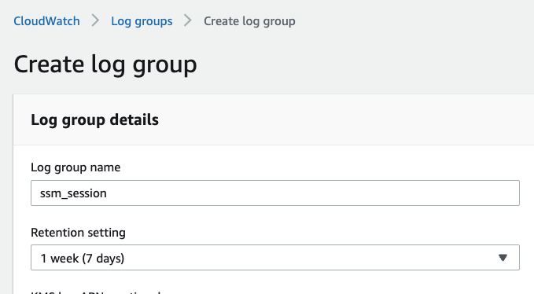
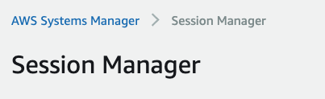
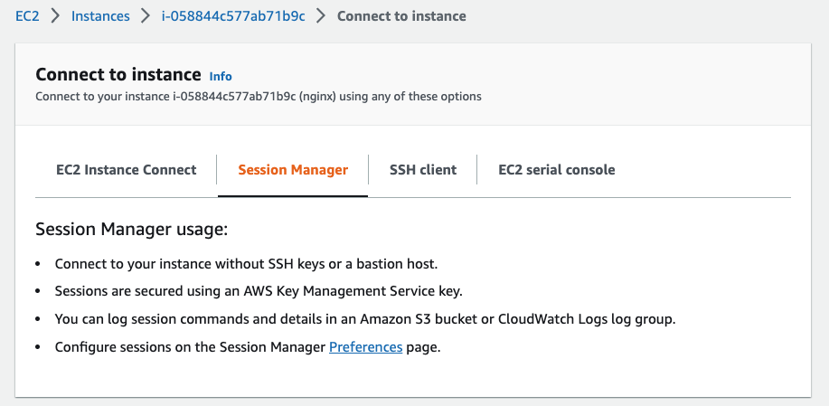
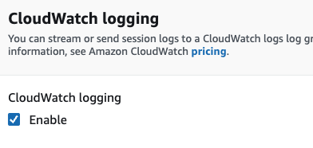
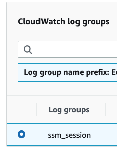

EC2 Hello World¶
Simple EC2 for testing cloud services. Often we have edge cases requiring a simple server in a cloud account. This EC2 has boilerplate options, which can be expanded to fit unique situations. This is an effort to minimize the intellectual burden associated with cloud infra.
This project took me 3 hours to first implement. Now I can do everything in about an hour.
VPC design patterns to keep our VPC secure¶
The best practice is to limit the number of entry points to our VPC by using the Application Load Balancer (ALB) for HTTP/HTTPS traffic and the bastion host for SSH traffic. With this, we can deploy hundreds of applications in our VPC yet still keep the entry points to our VPC to just the ALB and the bastion host.
The AWS environment I used for this post is detailed below. I don't discuss how to setup it up in this post but I will do so in another post. I will link it here when it's finished.
-
VPC with 4 subnets: 2 private subnets and 2 public subnets. Instances in the private subnet cannot be accessed directly from the internet but the instances themselves can access the internet (i.e to get software updates and patches, etc).
-
An application load balancer placed on the 2 public subnets. The ALB should be able to serve HTTP/HTTPs from anywhere. By design, an ALB has servers on the public subnets. Traffic goes in to these servers, and based on the request's path and host header, it should decide where to direct traffic.
-
A bastion host that can serve SSH traffic from anywhere. We will use this as a way to access all of our instance in the private subnet.
Cloud Artifacts¶
Services created in AWS and pre-requirements which need to be verified.
All my AWS links go to region
us-east-1
- AMI I use ubuntu but any bayer image is technically feasible.
- EC2 pick a cheap option for hardware, free tier is best
- Security Groups Virtual firewall for network traffic
Minimum pre-requirements. Before starting verify a VPC is installed.
Create a VPC using the service catalog. The SC product labelled as "pub and priv subnets with reserved CIDR" is typically what we use.
- VPC ID:
vpc-08dff0d6b84e7fe21 - VPC Name:
SC-073416988478-pp-czuonlduuhoo4
Delete these resources when finished. Leaving behind cloud resources costs money for Bayer (bad) and confuses me later when debugging cloud issues (very very bad). :)
TODO automate the provisioning/destruction of the services (PRs welcome)
The AWS console is used to provision the resources. CLI/SDK tools are available for power users but are not displayed here.
IAM¶
Create an (IAM Role)[https://us-east-1.console.aws.amazon.com/iamv2/home?region=us-east-1#/roles] for SSM access to EC2.
Create a IAM role. During creation, attach the AWS policy to the role. This policy allows SSH access and log creation.

IAM Role Name: nginx_elxsj
Security Group¶
Fetch Bastion SG¶
Copy the bastion SG ID. sg-085a4daa2d98002c6 description Bastion Host security group. Other servers in this VPC should only accept SSH traffic from this group
default VPC sg sg-08de2c7be6b097812
Create Security Groups¶
SG name: nginx_ec2
If we deploy our EC2 instance now, we would not be able to access it at all. This is because the security group of our EC2 instance aren't set up to accept any connections. Security groups are a set of rules for incoming and outgoing traffic. They govern which resources can communicate with a specific set of resources and in what way (i.e allow only connections via port 22 "ssh").
By default, a security group's rules for outgoing traffic are a pass-all (all traffic leaving the instance is allowed). For incoming traffic, however, we are left with the discretion of what resources we want to allow to connect to our EC2 instance and what kind of connections with them we would allow. We can specify these resources in 3 ways:
- a range of IP addresses (i.e allow all computers within the IP range of 192.168.0.0/24 to connect to my instance across all ports).
- a specific IP address (i.e allow 192.168.12.1 to connect to my ec2 instance via port 80 [http]),
-
a security group (i.e allow instances with the security group "bastion-host-sg" to connect to my instance via port 22).
-
Using this option is easier if the resources you are giving access to are within AWS. This is because you can just keep on adding instances into the chosen security group rather than add a new rule in this security group for every new instance we want to give access to
-
For example: rather than creating a rule to allow SSH traffic from 192.168.12.1 ("EC2 instance A") and another rule to allow SSH traffic from 192.168.12.2 ("EC2 instance B"), we can create a security group ("bastion-host-sg"), add EC2 instance A and B there, and add this security group to the rules of the security group for this EC2 instance ("ec2-nginx-sg").
-
With this, security groups serve 2 purposes. They contain a set of rules to govern incoming and outgoing traffic. It also serves as a grouping of AWS resources. This grouping can be referred to by other security groups in their own rules.
-
We have to set up the security group of our EC2 instance to be able to accept SSH traffic (so we can connect to it via SSH) and accept traffic from port 80 (http) from the load balancer.
For our setup, we will create a new security group and name it "ec2-nginx-sg". We would allow:
- port 22 (SSH) connections from the security group of the bastion host
- port 80 (HTTP) connections from the security group of the application load balancer.
Bayer Proxy SG¶
Allow reverse proxy to access VPC. Open EC2 > Security Groups and verify Bayer proxies, e.g.:
- Akana TCP 443 192.168.0.0/24 Akana Cidr
- Ocelot TCP 443 10.62.21.0/24 Ocelot Cidr
- Mulesoft TCP 443 10.70.200.0/21 Mulesoft Cidr
Provision EC2¶
This EC2 should take about five minutes to provision. Check the EC2 Console to verify the "Instance state" is Running.
|  |
EC2 name: nginx
EC2 SG name: nginx_default
EC2 key name: nginx_ec2 nginx_ec2_keypair_sirius_np
CloudWatch Logs¶
Create log groups for SSM
|  |
log group name: ssm_session
EC2 Session Manager¶
The session manager allow us to connect to any (almost) running EC2 and reduces the need for SSH keys.
Open SSM from Systems manager | | | :--: | |  | | |
|  |
Enable CloudWatch logging
|  |
Add the log group
we created this a moment ago
|  |
Open SSM and check for ubuntu user in a shell
$ awk -F: '{ print $1}' /etc/passwd | grep ub
ubuntu
$ bash
ssm-user@ip-10-88-214-149:~$ sudo apt-get -y update
sudo apt install -y nginx
sudo -u ubuntu -i
Verify nginx is running¶
ssm-user@ip-10-88-215-170:/var/snap/amazon-ssm-agent/6312$ systemctl status nginx
● nginx.service - A high performance web server and a reverse proxy server
Loaded: loaded (/lib/systemd/system/nginx.service; enabled; vendor preset: enabled)
Active: active (running) since Sat 2022-11-19 00:15:46 UTC; 2min 31s ago
Docs: man:nginx(8)
Main PID: 2855 (nginx)
Tasks: 2 (limit: 1145)
Memory: 4.6M
CGroup: /system.slice/nginx.service
├─2855 nginx: master process /usr/sbin/nginx -g daemon on; master_process on;
└─2856 nginx: worker process
Run this if nginx is not running sudo service nginx start
Configure nginx¶
Adjusting ubuntu firewall (ufw), if you think it is needed to install then you can work with this step. Firstly you should show the ufw list with the execution following command:
Allow port 80 for http request with the following command:
$ sudo ufw allow ‘NginxHTTP’
$ sudo ufw status (to see ufw status)
$ nginx -v (to see nginx version)
$ sudo nginx -t (to see nginx configuration file is ok or not)
$ sudo systemctl reload nginx (to reload nginx if any change in conf. file)
$ sudo systemctl stop nginx (to stop nginx service)
$ sudo systemctl restart nginx (to restart nginx)